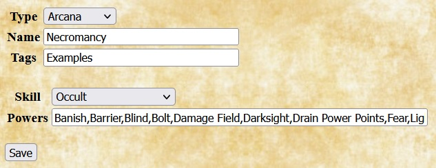
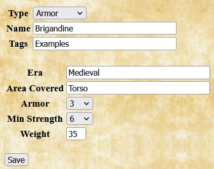
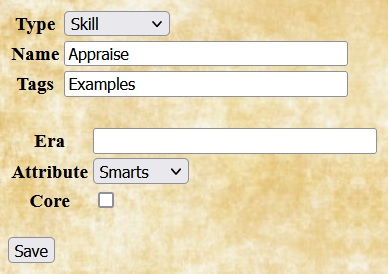
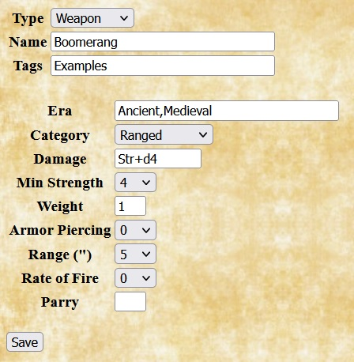

Arcanas
The SWADE Quilvyn plugin uses the term arcana to indicate the various types of arcane backgrounds a character might have—Magic, Miracles, Weird Science, etc. When adding a homebrew arcana, Quilvyn provides a field that allows you to enter the arcane skill associated with that arcana. If the arcana limits practitioners to a subset of powers, you can also enter the list of powers available; otherwise, Quilvyn assumes that characters with this arcana may make use of the full set.
The example shows the entry for a Necromancy arcana, which uses Occult as its arcane skill and provides access to a limited set of powers.
Armors
When entering a homebrew armor type, Quilvyn provides fields that allow you to enter the optional list of eras (Ancient, Medieval, Modern, and Future) appropriate for the armor, the body areas that the armor covers (one or more of arms, body (torso, arms, and legs), head, legs, and torso), the toughness bonus provided by the armor, the minimum strength required to wear it, and the armor's weight.
The example shows the entry for Brigandine armor—a jacket riveted with metal plates.
Concepts
For homebrew concepts, Quilvyn provides fields that allow you to enter the most important attributes, skills, and/or edges for characters built around that concept. Quilvyn uses these values when randomly determining information for the character; it will choose the items listed as important to the character concept more often than other alternatives.
The example shows the entry for a Scavenger concept. It places high value on the Common Knowledge and Repair skills, both of which are linked to Smarts.
Edges
For homebrew edges, Quilvyn displays fields to note the edge type and any requirements that must be met to select it. Quilvyn allows you to specify two kinds of requirements for an edge. The Prerequisite box lists any requirements that must be met to select the edge; Quilvyn generates a validation error if the edge is selected for a character who does not meet these requirements. The Implies box lists any requirements that, while not strictly required, make the edge useless if not met. For example, although the rules don't require it, the Ace edge from the SWADE rules is likely to be useless to a character that lacks the Boating, Driving, and Piloting skills. Quilvyn will generate a validation warning if the Implies requirements are not met. When specified, the Prerequisite and Implies fields will normally contain references to character attributes; see the discussion of using character attributes for how to include these. The effects of an edge are described separately in a feature with the same name.
The example shows the entry for a combat edge named Flail Expert. The Prerequisite box notes that it requires at least four advances (i.e., a rank of seasoned or higher), and the Implies box notes that the edge is useless unless the character possesses a flail. The example also shows the corresponding feature that describes the effect of selecting the Flail Expert edge.
Eras

Adding a homebrew era requires only specifying the name, although you will likely want to also add weapons, and perhaps armor and skills, that are particular to that era.
The example shows the entry for the Victorian era, which might be useful when running a game based on Jules Verne's novels.
Features

In Quilvyn, features describe the effects of edges, hindrances, and racial abilities. When adding a homebrew feature, enter the section of the character sheet (one of arcana, attribute, combat, description, feature, or skill) where the note for the feature should appear, then enter the note text. You can enter multiple sections and notes, but the number of sections entered must equal the number of notes. Feature notes can both reference and modify character attributes; see the discussion of using character attributes for how to do this.
The example shows the entry for a feature named Glib with a note that appears in the skill section of the character sheet. It adds 1 to the character's Performance and Persuasion skills.
Hindrances
Adding a homebrew hindrance requires only specifying the name and the severity (Major or Minor). By convention, Quilvyn adds a plus sign to the end of names of major hindrances (so, "One Arm+"), but there's no requirement that you follow this with homebrew hindrances. Although none of the hindrances from the core rule book have prerequisites that must be met, Quilvyn allows you to add them to homebrew hindrances. You could, for example, restrict certain homebrew hindrances to characters of a specific race or concept.
The example shows the entry for a minor hindrance named Gullible, along with the corresponding feature that describes its effects.
Powers
When adding a homebrew power, Quilvyn displays fields that allow you to enter the minimum number of advances (i.e., rank) needed to use the power, the number of power points expended when using it, its maximum range, the description of its effects, and any power-specific modifiers that can be applied.
The example shows the entry for the a power named Borrow Trait, which is available to seasoned characters and costs 2 power points to cast, plus an additional 2 power points for multiple traits.
Races
For homebrew races, Quilvyn provides a field for listing the racial abilities associated with the race. Quilvyn also allows you to specify prerequisites for homebrew races; for example, you might want to define a race that has a minimum strength requirement.
The example shows the entry for the Celestial race, taken from the ancestries in the SWADE Fantasy Companion.
Shields
When adding a homebrew shield, Quilvyn provides fields for entering the optional list of eras appropriate for the shield, the Parry and Cover values it provides, the minimum strength required to use it, and its weight.
The example shows the entry for a medium steel shield, which provides a greater parry value than a standard medium shield at the cost of requiring a higher strength to use it.
Skills
When adding a homebrew skill, Quilvyn displays fields for the optional list of eras appropriate for the skill and for the skill's linked attribute. You can also check the "Core" box to indicate that this homebrew skill is a core skill, which means that all characters will automatically have a d4 in the skill.
The example shows the entry for an Appraise skill, linked to Smarts.
Weapons
When adding a homebrew weapon, Quilvyn displays fields that allow you to enter the optional list of eras appropriate for the weapon, its primary category (Unarmed, One-Handed, Two-Handed, or Ranged), the damage it inflicts, the minimum strength required to use it effectively, its weight, and any armor piercing, range, rate of fire, and parry attributes it might have.
The example shows the entry for a boomerang, a ranged weapon with a 5" (10 yard) range that inflicts Str+d4 damage.